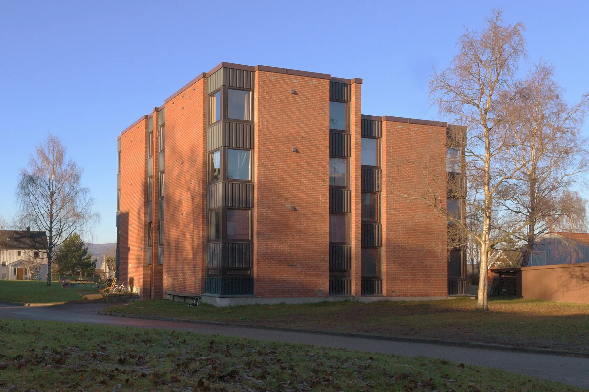
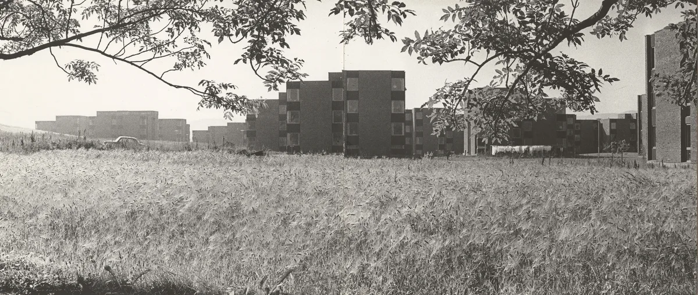
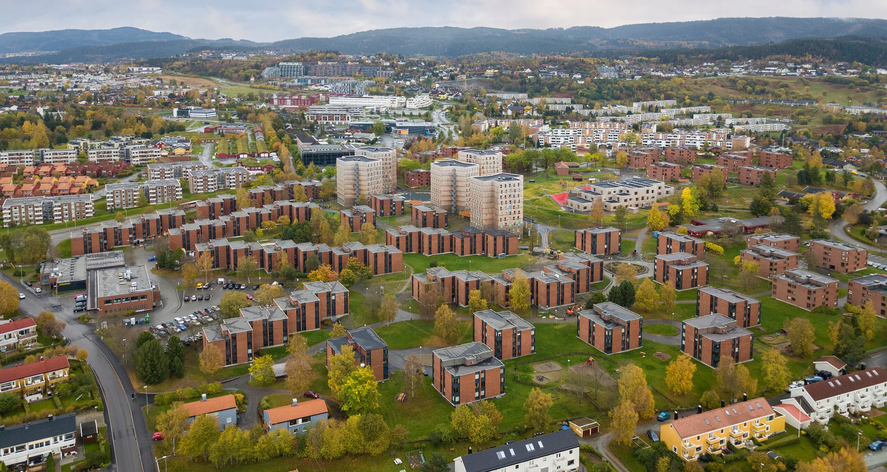
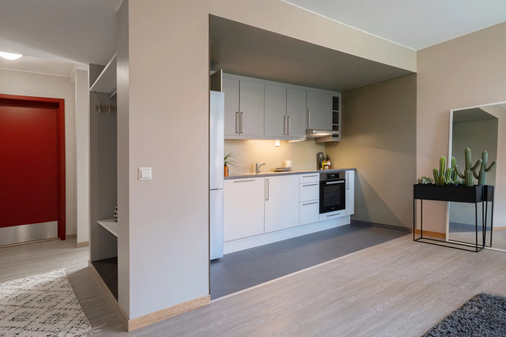
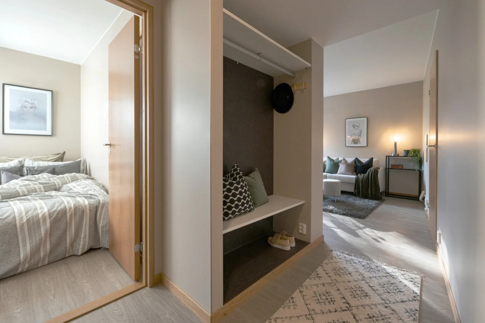
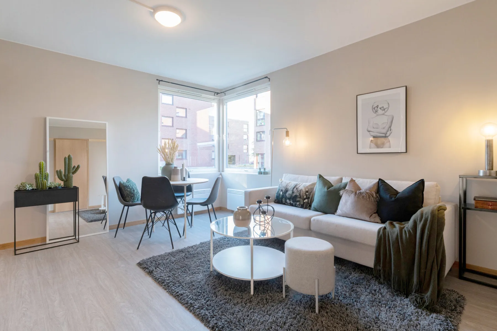
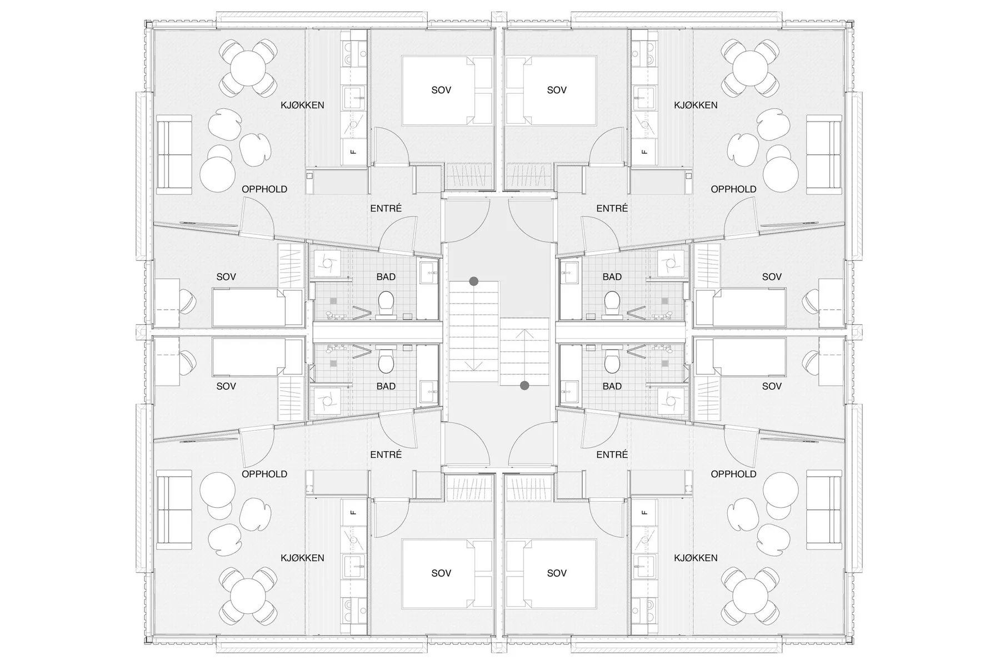
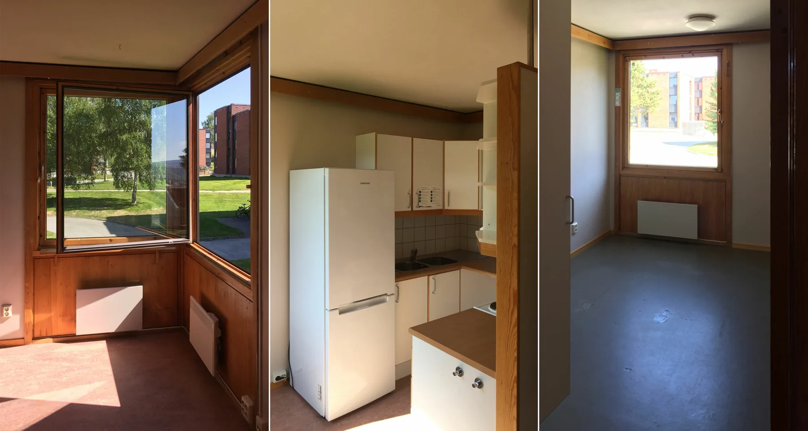

Herman Krags veg
26Studentboliger

- Byggherre
- Sit Studentsamskipnaden i Gjøvik, Ålesund og Trondheim
- Byggeår
- 2021
- Medarbeidere
- Iver Berg Blomsøy, Heidi K. Hynne, Jan-Kristian Orvik
Om prosjektet
Elleve studentblokker med 132 leiligheter er rehabilitert på Moholt. Nye planløsninger tilpasser boligene til familier, mens den opprinnelige teglbebyggelsens karakter bevares.



Forstørr

Forstørr

Forstørr

Forstørr

Forstørr

Forstørr

ForstørrEn av de 12 berørte studentblokkene. Foto og tegninger (om ikke annet er nevnt): Bergersen Arkitekter AS. · Moholt Studentby, av Herman Krag, stod ferdig i 1964, og er i dag en del av en større studentby, hvor de originale blokkene den dag i dag fortsatt er i bruk i henhold til formålet. (Foto: Byggekunst Nr 7 1967) · Dagens studentbyområde på Moholt, 2020 (Foto: Sit). · Nytt kjøkken, i slisse for å skape en egen kjøkkensone i det felles oppholdsrommet / stuen. (Foto: Sits megler) · Nyrenovert – her fra entréen. (Foto: Sits megler) · Det nye felles oppholdsrommet. (Foto: Sits megler)
La oss begynne med en samtale